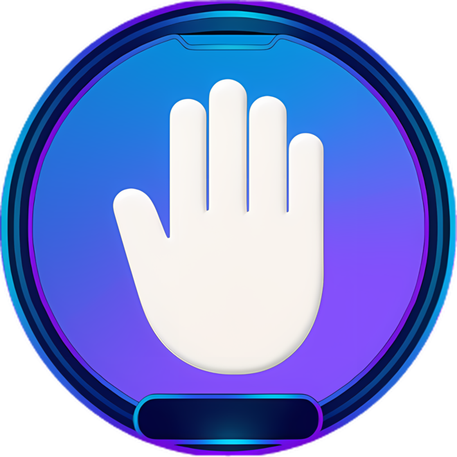
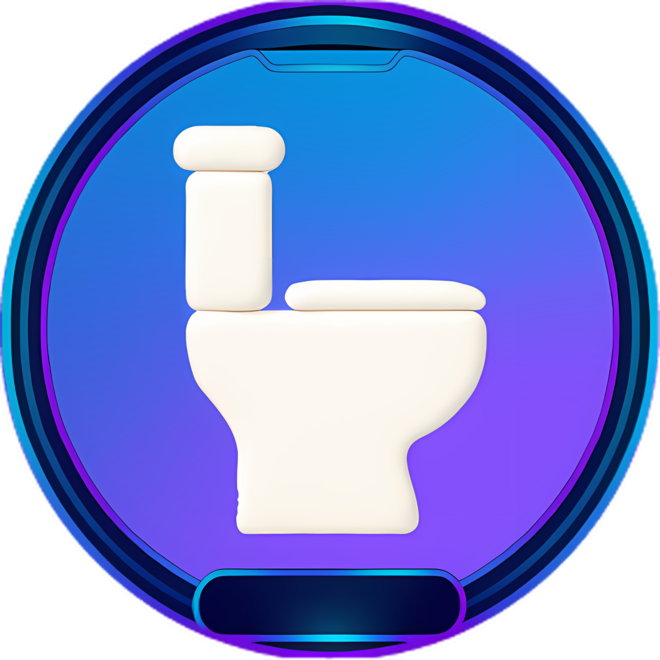

LESSON 9
WELCOME BACK, FUTURE BUILDERS!
Today our ride learns a new trick!


LAST TIME
- 1We built a drop tower
- 2A LOOP 🔁 made it climb
- 3Up, up, up… DROP!
LEO“Up, up, DROP… Boring!” 🥱
LUNA“Remember what we asked?”
Spin AND drop… how? 🤔
REMEMBER OUR RULES?





HOW WAS IT?
Was this hard? 😅
Was this cool? 😎
Where is your loop inside a loop? 🔁
SHOW WHAT YOU KNOW
- 1How did you use a nested loop?
- 2How did you test it?